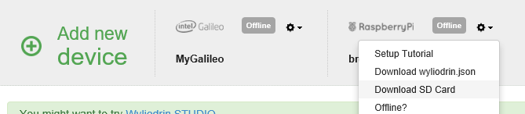

Equipment
- Raspberry Pi.
- A micro SD Card with minimum 4 GB (class 10 is recommended)
- Ethernet cable
- Laptop
Get Chrome
Download and install Google Chrome for your platform
Get Wyliodrin Studio
Go to Google App Store and follow the instruction
Setting up the board
Setting up the board requires the following steps:
- Downloading the Raspberry Pi 3 Card Image
- Unzip the archive and write it to an SD Card
- Insert the micro SD Card into the Pi and connect the board directly to your computer using an Ethernet cable.
SD Card Image
You already have followed a similar process in your Computer Systems module with the Raspberry Pi.
The next step that you need to take is to download and unzip the Raspberry Pi 3 Card Image and write it on an micro SD Card. The card need to be at least 4 GB.
Windows
- Insert the SD card into your SD card reader and check what drive letter it was assigned. You can easily see the drive letter (for example E:) by looking in the left column of Windows Explorer. You can use the SD Card slot (if you have one) or a cheap Adapter in a USB slot.
- Download the Win32DiskImager utility (it is also a zip file).
- Extract the executable from the zip file and run the Win32DiskImager utility; you may need to run the utility as Administrator! Right-click on the file, and select 'Run as Administrator'
- Select the unzipped Wyliodrin SD Card Image and rename it to iot-devkit-latest-mmcblkp0.direct.img.
- Select the drive letter of the SD card in the device box. Be careful to select the correct drive; if you get the wrong one you can destroy your data on the computer's hard disk! If you are using an SD Card slot in your computer (if you have one) and can't see the drive in the Win32DiskImager window, try using a cheap Adapter in a USB slot.
- Click Write and wait for the write to complete.
- Exit the imager and eject the SD card.
Linux
Will be available soon
Mac OS
- Insert the SD Card into the SD Card reader or use a cheap SD Card adapter for your computer.
- Download piwriter.
- Run PiWriter. You will be prompted for an administrator user and password. You will need to have adminustrator right to use PiWriter. If unsure what to do, just type in your pasword.
- Follow the instructions on screen
- Unzip the Wyliodrin SD Card Image and rename it to iot-devkit-latest-mmcblkp0.direct.img.
- When prompted to select a file, select the unzipped Wyliodrin SD Card Image.If PiWriter fails, please use this version of PiWriter.
Wyliodin OnLine IDE
Equipment
- Single Board Computer (Raspberry Pi or Intel Galilleo)
- A micro SD Card with minimum 4 GB (class 10 is recommended)
- Ethernet cable
- Laptop
Create a Wyliodrin account
Go to Wyliodrin and follow the instruction to set up an account. You can choose the free account.
Setting up the board
Setting up the board requires the following steps:
- Adding the board to Wyliodrin
- Downloading the SD Card Image
- Unzip the archive and write it to an SD Card
- Download the board configuration file and write it to the SD Card
- Insert the micro SD Card into to Intel Galileo and connect the board to the Internet
Sign in into your Wyliodrin account. On the Wyliodrin Projects page, click the Add Board button. You will be asked to provide the name and the type. Enter any name you like and select the board type (e.g. Galilleo or Raspberry Pi).
SD Card Image
You already have followed a similar process in your Computer Systems module with the Raspberry Pi.
Once the board has been added to Wyliodrin, you will see a short tutorial page on how to activate the board.
The next step that you need to take is to download and unzip the SD Card Image for your device. Do this by selecting Download SD card from the device menu.

Windows
- Insert the SD card into your SD card reader and check what drive letter it was assigned. You can easily see the drive letter (for example E:) by looking in the left column of Windows Explorer. You can use the SD Card slot (if you have one) or a cheap Adapter in a USB slot.
- Download the Win32DiskImager utility (it is also a zip file).
- Extract the executable from the zip file and run the Win32DiskImager utility; you may need to run the utility as Administrator! Right-click on the file, and select 'Run as Administrator'
- Select the unzipped Wyliodrin SD Card Image and rename it to iot-devkit-latest-mmcblkp0.direct.img.
- Select the drive letter of the SD card in the device box. Be careful to select the correct drive; if you get the wrong one you can destroy your data on the computer's hard disk! If you are using an SD Card slot in your computer (if you have one) and can't see the drive in the Win32DiskImager window, try using a cheap Adapter in a USB slot.
- Click Write and wait for the write to complete.
- Exit the imager and eject the SD card.
Linux
Will be available soon
Mac OS
- Insert the SD Card into the SD Card reader or use a cheap SD Card adapter for your computer.
- Download piwriter.
- Run PiWriter. You will be prompted for an administrator user and password. You will need to have adminustrator right to use PiWriter. If unsure what to do, just type in your pasword.
- Follow the instructions on screen
- Unzip the Wyliodrin SD Card Image and rename it to iot-devkit-latest-mmcblkp0.direct.img.
- When prompted to select a file, select the unzipped Wyliodrin SD Card Image.If PiWriter fails, please use this version of PiWriter.
Board Activation
Once you have written the Wyliodrin SD Card image to the card, you will need to download and copy to the card the Wyliodrin configuration file. Just go to the Wyliodrin Projects page, click the icon on the right next to the boards name and select Configure. Read the instructions on screen, you will find a link to a file called wyliodrin.json.
Insert the SD Card into your computer. Once it apperas, copy the file wyliodrin.json directly on the card. Make sure the file is named exactly wyliodrin.json.
Please be aware that each board has a different configuration file. Even if they are all called wyliodrin.json, the content is different for each board that you want to activate.
Eject the card from you computer and insert it into the device. Connect the device to an Internet cable and plug it in. You will have to wait a little, the board will appear as online on the Wyliodrin Projects page.
You have successfully activated the device